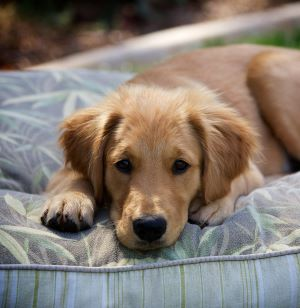

Flower
Flower is the life of a party and loyal!
Known for their agility and obedience, this Australian Shepherd (Aussie) make great ranch dogs and they're popular as family pets. They are energetic dogs that require daily exercise and regular grooming. If you plan to purchase an Aussie, be sure you can provide for the needs of a dog of this active breed before bringing one home.
Age: 5 years
Size: Medium-size
Price: $280
Dumpling
A cutie patootie!
This Corgi's short but powerful legs, muscular thighs, and a deep chest equip them for a hard day’s work. Built long and low, they are surprisingly quick and agile. They are bright, sensitive dogs who enjoys playing with this human family and responds well to training. Families who can meet their bold but kindly corgi’s need for activity and togetherness will never have a more loyal, loving pet.
Age: 2 years
Size: Small
Price: $250
Molly
fully comfy cuddle
This Caucasian Shepherd is loyal, strong, and courageous, it is a fierce family protector bred to care for flocks and defend the home against wild predators. They are highly territorial and won’t back down from a fight. They are very intelligent but their stubborn, independent nature can make them difficult to train, and their natural distrust of strangers can lead to aggressive tendencies if they are not kept in check by an experienced trainer.They will reward experience, patient, consistent trainers with gently love and affection that will make them excellent lifelong family members.
Age: 8 months
Size: Small-medium
Price: $390
Curlyfry
Curly ball of energy
This Labradoodle are originally developed to be hypoallergenic dogs which means that their coat does not shed. They are also known as guide dogs, and therapy dogs. They are happiest around people, and they are smart, reserved, and quiet with a fine high-maintenance coat that needs to be trimmed regularly.
Age: 2 years
Size: Small-medium
Price: $250
Daisy
Like a golden flower!

This Golden Retriever is an exuberant Scottish gundog known for their famous dense, lustrous golden coat that gives the breed its name. It is one of America's most popular dog breeds, they are very sturdy, muscular dogs and they are also known as hunting dogs, and guide dogs.
Age: 3 years
Size: Medium
Price: $325
Benny and Chibi
Benny and Chibi are twin troublemakers!
This Dachshund (Wiener Dog) have an energetic, pleasant expression. They are scent hound dog breed who were bred to hunt badgers and other tunneling animals, rabbits, and foxes. Their versatility makes them excellent family companions, show dogs, and small-game hunters.
Age: 3 Years Old
Size: Small
Price: $300
Richie and Marbles
Energetic bundles of fun!
This Siberian Husky is a beautiful and extremely energetic dog breed. Daily physical activity is a must for them. They are very clever and will run off if given the chance, so watch it carefully. this athletic, intelligent dog can be independent and challenging for first-time dog owners.
Age: 1 year
Size: Medium-large
Price: $350 each
Wyatt
A spread of love and joy!

This German Shepherd is a very energetic and playful. They love interacting with children and other pets. They are quite cautious of strangers, due to their guarding instincts, so make sure they warm up to people before interacting with them. This type of dog is quite easy to train.
Age: 2 years
Size: Medium
Price: $325
Gina
Cuddly fluffy friends!
This Shiba Inu is a sturdy, muscular dog with a bold, confident personality to match. Their white markings combined with their coloring and their alert expressions and smooth stride makes them almost foxlike. They serve primarily as a companion dog.
Age: 1 year
Size: Small
Price: $340
Turtle and Rosie
Odd balls of fun!
This Nova Scotia Duck Tolling Retriever is a medium-sized gundog bred primarily for hunting. It is often referred to as a "toller". It is the smallest of the retrievers, and is often mistaken for a small Golden Retriever. Tollers are known to be intelligent, easy to please, alert, and high-energy dogs.
Age: 5 Years Old
Size: Medium
Price: $490
Mia
Tiny cyclone made of fur.

This Pomeranian is a fluffy and friendly breed of dog. They are often classified as a toy dog breed due to their tiny sizes. Must have regular exercise. Pomeranians are very perky and extroverted. They are intelligent, but sometimes do not realize they are small and will confront larger dogs.
Age: 6 months
Size: Small
Price: $275